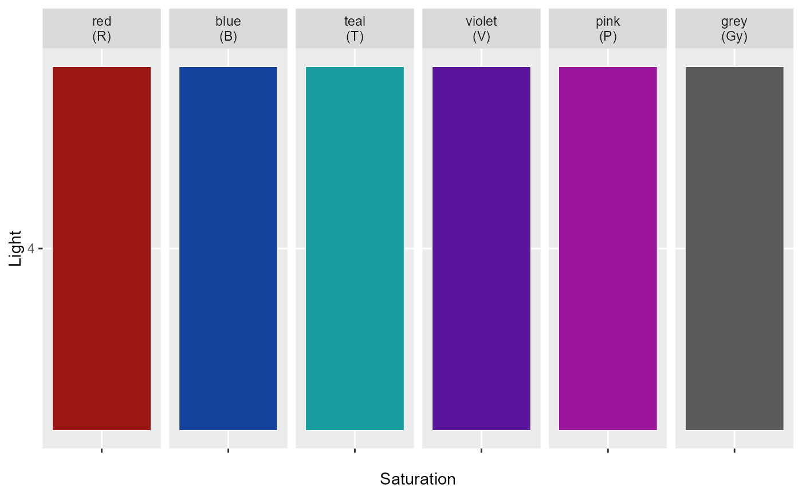
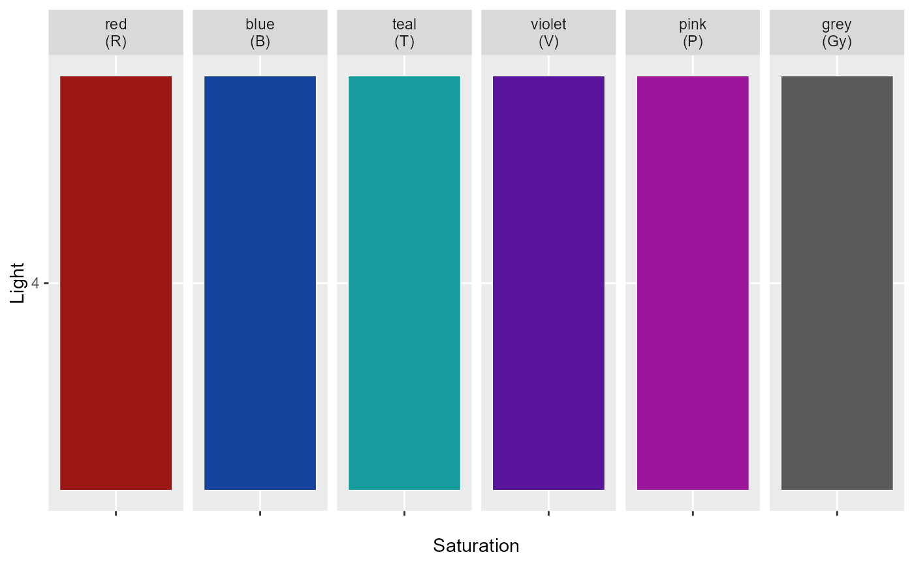

Generates a palette within across hues
See also
Other palettes:
sc_within()
Examples
sc_across(palette = "BO")
#> [1] "#4479E4" "#E4AF44"
sc_across(palette = "BO", sat = "bright", return = "table")
#> color_name hex
#> 1 brightblue3 #2970FF
#> 2 brightorange3 #FFB829
sc_across(palette = "BO", sat = "bright", return = "plot")
 sc_across(palette = "RBTVPGy", light = 4, return = "plot")

sc_across(palette = "RBTVPGy", light = 4, return = "plot")
